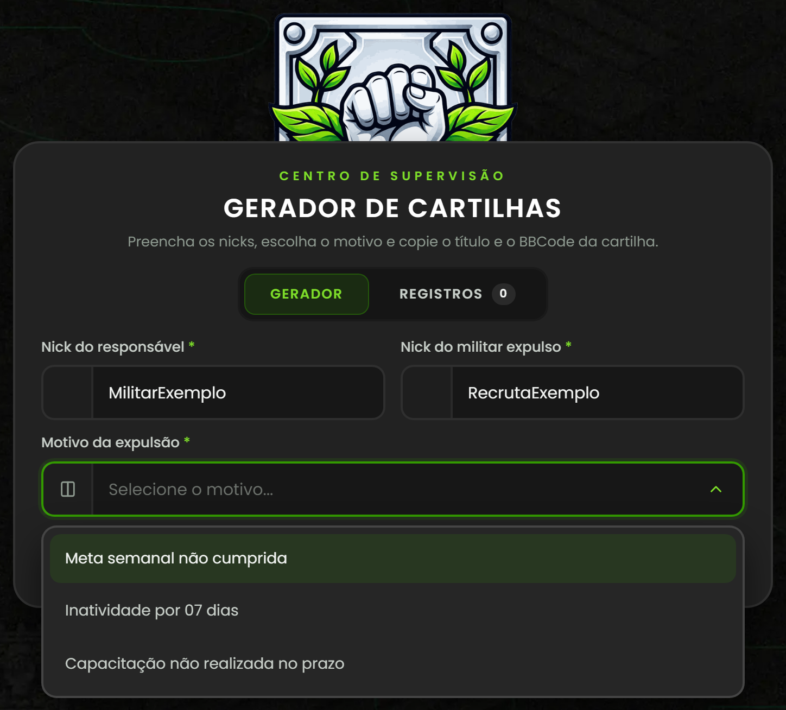
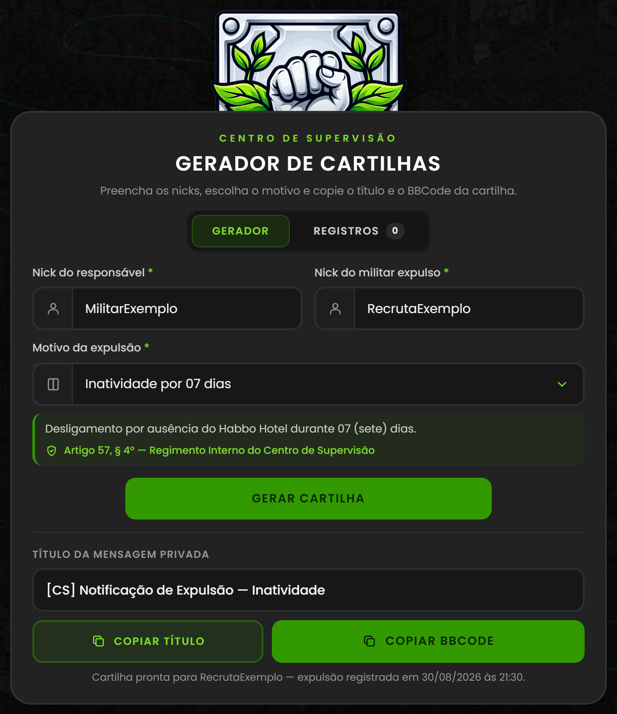
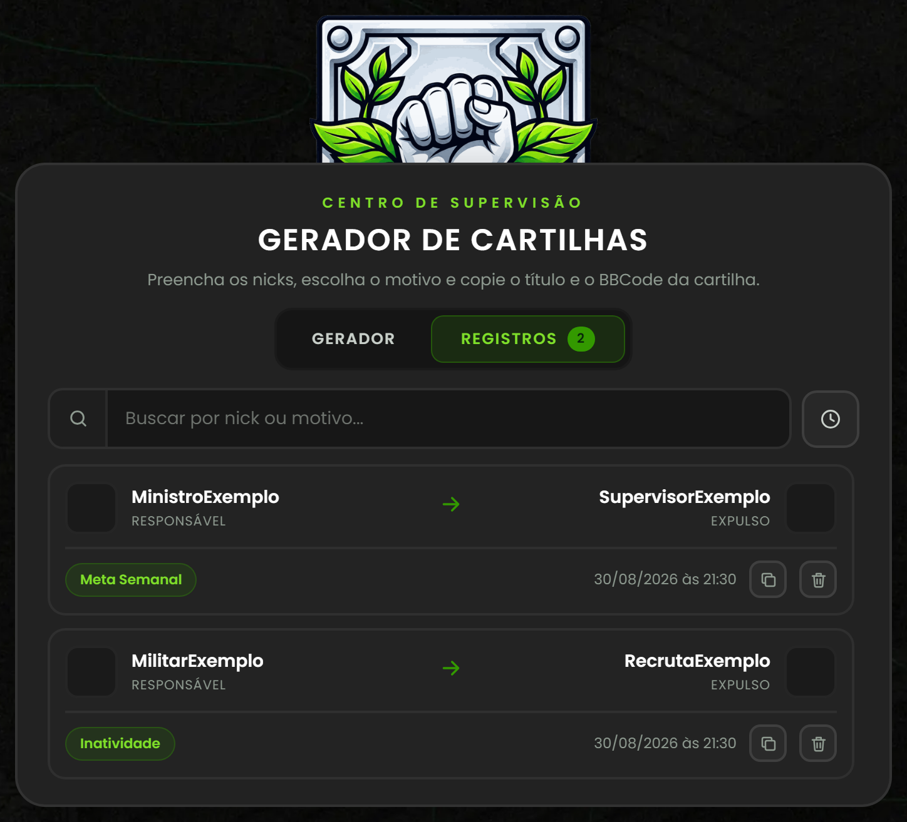
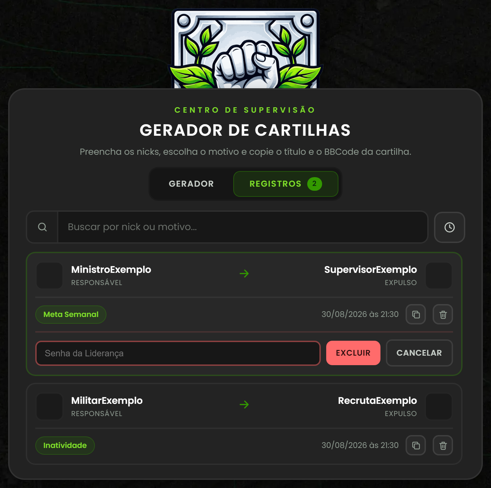

PORTAL CS

GUIA DE UTILIZAÇÃO
Gerador de Cartilhas de Expulsão
Centro de Supervisão
Centro de Supervisão
portalcs.netlify.app · Uso interno da Liderança e dos Supervisores
Todo registro começa pela identificação correta das duas partes envolvidas e do motivo que fundamenta a decisão. Antes de prosseguir, confirme atentamente os nicks informados: a identificação incorreta de um militar poderá resultar no envio da notificação à pessoa errada.

Com os nicks e o motivo devidamente preenchidos, revise as informações uma última vez. Após confirmar, clique em Gerar Cartilha. O Portal CS preparará automaticamente o título e o BBCode da notificação — e o registro já é enviado ao histórico compartilhado do Centro de Supervisão.

A cartilha não aparece na tela como texto solto: o conteúdo é copiado diretamente para a área de transferência. Utilize os botões de cópia para evitar alterações acidentais na estrutura do BBCode.
As expulsões registradas ficam disponíveis no histórico compartilhado do Portal CS, permitindo a consulta em diferentes dispositivos. Um registro criado por qualquer supervisor aparece automaticamente para toda a Liderança — não é necessário estar no mesmo computador.

A exclusão afeta o histórico de todos os supervisores ao mesmo tempo e não pode ser desfeita. Por isso, ela é protegida por uma senha combinada com a Liderança.

Uma cartilha enviada representa uma decisão formal do Centro de Supervisão. Antes de encaminhar a mensagem privada no System, confirme os pontos abaixo.